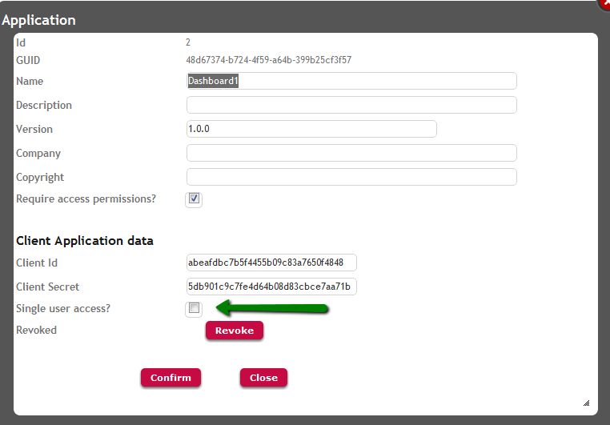

Single User Access is a Smart Devices GAM Application property that allows defining if a single user can access the application from different devices, without losing the session in all the devices he is logged in when he logs out from one of them.

If set to False, the user can log in to two different devices, and if he logs out from one of them, he keeps logged in to the other.
This property is set through the GAM Backoffice, in the Application properties dialog.
GAMExampleEntryApplication web panel (located in GAM Example folder) is an example where this property is used.
The way to use it in GeneXus code (by using the GAM API) is the following:
&Application.ClientAccessUniqueByUser = &AccessUniqueByUser // Boolean data type
| Backlinks | |
| Going into production: checklist for Applications using GAM | Hardening of GeneXus Systems and Deployments with GAM |